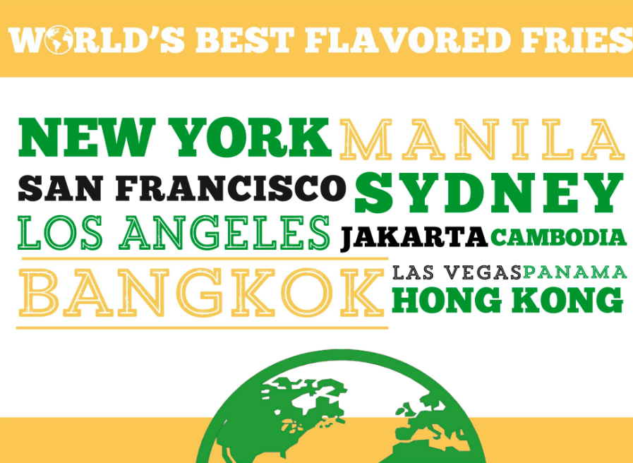

Potato Corner, dubbed as the World’s Best Flavored Fries, has been a leading brand in the food industry for 25 years with over 1,100 branches worldwide.
Potato Corner opened its first outlet in the Philippines in October 1992 and began franchising the year after. Today, it has grown from small carts into in-line stores found in almost every corner of the world – in malls, schools, hospitals, bus stations, amusement parks, and even tourist destinations in multiple countries. In every corner of the world, someone wants Potato Corner.
Throughout the years, Potato Corner has garnered numerous awards, mostly recognizing its excellent business model and well-loved brand. It has received the Franchise Excellence Hall of Fame Award by the Philippine Franchise Association and Department of Trade and Industry in 2003, won Best Franchise of the Year on three consecutive years, and most recently, bagged the Global Franchise Award recognized by the same institution. Potato Corner is truly an iconic brand for kids and kids-at-heart and a distinguished business venture for entrepreneurs.
